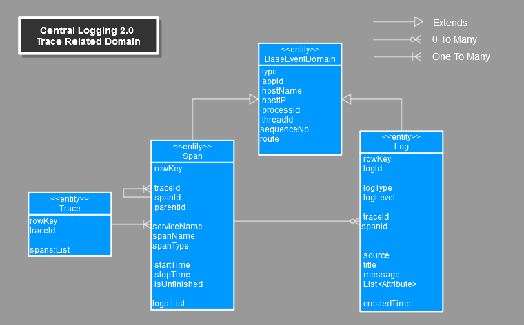
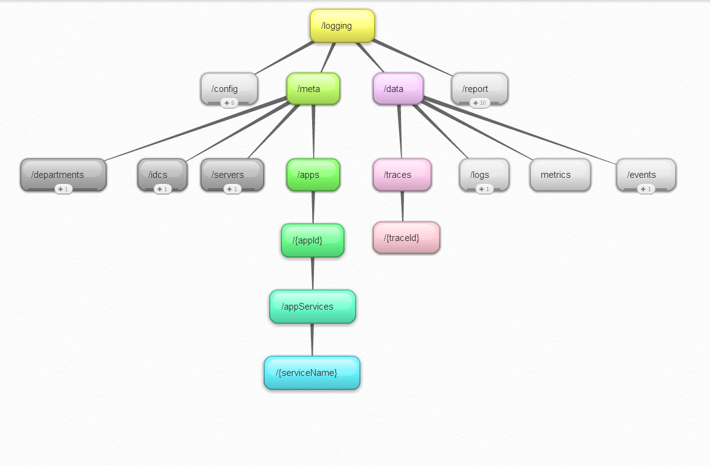
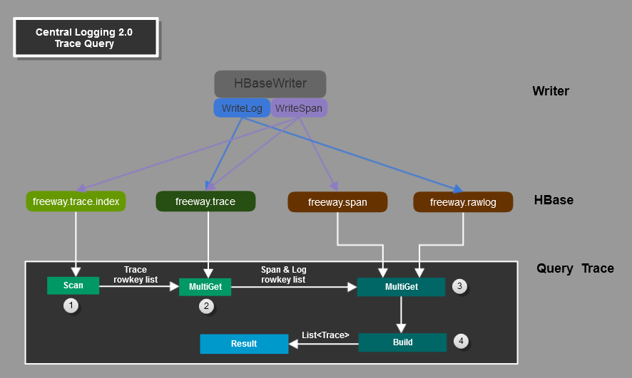

TraceApi设计文档
1 概述
Trace对于Trouble Shooting, 解析模块依赖关系优化设计，程序性能调优有着重要的价值。从长远来看，对于大数据分析，数据挖掘也是重要的基础数据。
目前我们使用的Trace实现是借鉴了Twitter的开源项目Zipkin, 借鉴了他的schema设计，并使用了他的前端实现。
但随着数据量的越来越大，由于携程的特殊使用场景，这种实现方式需要改进一下。在这种实现方式下：
- span与log绑定发送，应用端存在内存泄漏的风险
- 查询web应用是基于play的，并且是非maven项目，与现有logging应用分离且难以维护。
- api与界面没有分离
- 难以扩展与修改
- 针对目前schema的写实现，难以支持现有的数据量，有时会有积累
- 与Span有关的Log存储了两份，一份单独存储，一份作为span的一部分存储，严重浪费空间
2 设计目标
这次重新设计主要实现以下目标：
- Agent端实现span与log的分离发送(谢延辉团队)
- 写实现重新设计，提高性能，并且负责建立span与log的依赖关系
- 设计实现查询Api，供数据查询与查询界面使用
- 提供新的trace查询界面（储诚栋团队）
3 总体架构

基本理念：
- 写: Span 与 Log相互独立的写入HBase
- 读: Api读时，再将相应的Span与Log组合成Trace的概念
主要模块与功能：
-
Agent:
- 负责从应用端采集数据，发往Collector.
- 改造后，需要将Span与Log分别发送
-
Collector&Writer:
- 负责将Span与Log分别写入HBase
- 向后兼容，对于Span与Log一体的情况，负责将其拆分填充必要信息，再分别写入HBase
- HBase(Storage): 用作存储，设计出合理的Schema
-
RestApi:
- 负责向外提供合理的rest风格api
- 负责将相关的Span与Log分别查询出来，再组装成Trace,作为Api的结果返回
-
LogBrowser:
- 负责提供界面
- 使用RestApi查询出Trace信息，再将其渲染成可神化的图形
需要注意的地方: 由于Span与Log是分离发送，查询时在组合。所以需要存储如何组合的依赖关系。这个需要在Agent端就填充好。这个需要扩展字段并升级thrift协议.
4 领域模型
4.1 成员及关系

上图中的对象：
- Trace: 代表一次调用追踪
- BaseEventDomain: 基类，代表了数据来源。
- Span: 代表一个trace实例中的一次方法追踪
- Log: 代表一条日志
总结:
- 一个Trace代表一次调用追踪
- Trace可以被看作是抽象的，相关的Span组合在一起，就有了Trace的概念, Trace与Span一对多关系
- 一个Trace中的所有Span组成一个树形结构，即除了RootSpan外，任何一个Span都有一个Parent Span
- 每个Span中可能包含多条Log
- Log可以单独存在，即并不属于任何Span
- Log如果存在于Span，同时只能存在于一个Span中，Span与Log一对多关系
4.2 实体定义
BaseEventDomain:
| 属性 | 类型 | 说明 |
|---|---|---|
| type | String | 数据分类，保留使用 |
| hostName | String | 数据来源的服务器的host name |
| hostIP | String | 数据来源的服务器的ip |
| processId | String | 产生该数据的进程号 |
| threadId | long | 产生该数据的线程号 |
| sequenceNo | long | 来自于同一数据源(具体到线程)的某一类数据产生的顺序序列号 |
| route | String | 路由打点信息，数据从agent发出到持久化，经过和角色的时间戳信息 |
Log:
| 属性 | 类型 | 说明 |
|---|---|---|
| rowKey | String | Log在Hbase中的row key |
| logId | long | Log的id号，一般由agent产生，并不是全局唯一 |
| logType | LogType | Log的类型 |
| logLevel | LogLevel | Log的level |
| traceId | long | Log产生时，如果存在trace,trace的Id号 |
| spanId | String | 如果Log是在某个Span生命周期记的，对应Span的id号 |
| source | String | Log的来源，比如某个类名 |
| title | String | 日志title |
| message | String | 日志内容 |
| attributs | String | 日志附加属性，键值对 |
| createdTime | String | 数据来源的服务器的host name |
Span:
| 属性 | 类型 | 说明 |
|---|---|---|
| rowKey | String | Span在Hbase中的row key |
| serviceName | String | 对应的service name |
| spanName | String | 对应的service的method name |
| spanType | SpanType | Log的level |
| traceId | long | span所属trace的Id号 |
| spanId | long | span的id号，一般由agent产生，并不是全局唯一 |
| parentId | long | 此span父span的id号 |
| startTime | String | span的开始时间 |
| stopTime | String | span的结束时间 |
| isUnfinished | String | 此span是否是正常结束的，通过stop方法 |
| logs | List | 此span所包含的日志 |
Trace:
| 属性 | 类型 | 说明 |
|---|---|---|
| rowKey | String | Trace在Hbase中的row key |
| traceId | long | trace的Id号 |
| spans | List | 此trace所包含的Span |
5 Restful Api 接口

5.1 概述
用于提供trace相关的rest api, 主要返回两种数据xml和json. trace相关的api主要分为两类：
- meta: 元数据接口，用于获取追踪过的某个app的service和method(spanName)。
- data: 数据接口，根据查询条件获取具体的trace实例
5.2 Api接口定义
5.2.1 Meta Api
| Api 地址 | 支持的方法 | 请求参数 | 返回 | 描述 |
|---|---|---|---|---|
| /logging/meta/apps/{appId}/appServices | ||||
| GET | 路径参数：appId | JSON/XML | 获取某个应用的开启过trace的service列表 | |
| /logging/meta/apps/{appId}/appServices/{serviceName} | ||||
| GET | 路径参数：appId，serviceName | JSON/XML | 获取某个应用的某个具体的Service,返回值包含这个service的method列表 | |
5.2.2 Trace Api
| Api 地址 | 支持的方法 | 请求参数 | 返回 | 描述 |
|---|---|---|---|---|
| /logging/data/traces | ||||
| GET | URL 参数：appId, serviceName, methodName, startDate, endDate | JSON/XML | 根据查询条件获取trace实例列表 | |
| /logging/data/traces/{traceId} | ||||
| GET | 路径参数：traceId | JSON/XML | 根据traceId获取某一个具体的trace实例 | |
6 HBase Schema设计
为了实现上述目标，需要重新设计trace相关的数据如何在hbase中存储。 log存储不在改变，主要是trace和span相关的hbase table schema的设计。
6.0.1 表freeway.trace.index
| rowkey | column family:trace | |||||||||||
|---|---|---|---|---|---|---|---|---|---|---|---|---|
| AppId | Days | Seconds | DC | ServiceName | SpanName | HostName | IP | ThreadId | TraceId | SpanId | AddtionalInfo | freeway.trace RowKey |
| 3B | 1B | 3B | 1B | 4B | 4B | 4B | 1B | 1B | 1B | 1B | 9B x 8 +7 | |
实际上是span的index, 每一个span增加一条记录。 rowkey组成:
- AppId: 一数字,为了优化存储，足够散列，由原始appId计算获得: appid->bitreveal
- Days: 距离1970/01/01 00:00的天数对30取模
- Seconds: 倒序 距离一天结束的秒数，即 3600*24 - (Hour x 3600 + Seconds) ,
- DC: 数据中心，保留使用
- ServiceName: 对ServiceName取4字节的Hash
- SpanName: 对SpanName取4字节的Hash
- HostName: 对HostName取4字节的Hash
- IP: 转换成数字
- ThreadId: 数字
- TraceId: 数字
- SpanId: 数字
-
AddtionalInfo:
- 共8对，每对间使用|分隔
- 每对的key value使用:分隔
- key和value都是长度4B, 是分别对原始key和vaue取Hash获得
- 排好序
6.0.2 表freeway.trace
| rowkey | column family:span | |||||
|---|---|---|---|---|---|---|
| spanId-1 | spanId-2 | spanId-3 | ... | spanId-n | ||
| hashCode | traceId | log RowKey list | log RowKey list | log RowKey list | ... | log RowKey list |
6.0.3 表freeway.span
| rowkey | column family:content | |
|---|---|---|
| hashCode | traceId-spanId | span serialized content |
7 读写实现

7.1 写模块实现
主要分为两部分：
-
收到一条log时
- 在正常存储log的同时，需要向表freeway.trace添加相应的数据
-
收到一个span时
- 向freeway.trace.index添加一条记录
- 向freeway.span添加一条记录
- 向freeway.trace作一条确认操作，因为有些span没有log
- ToDo:详细设计
7.2 读模块实现
读模块即查询模块，可以分为四个步骤实现：
-
获取目标trace的rowkey列表
- 直接知道traceId, 转换成rowkey
- 组装查询条件从表freeway.trace.index查询出，使用scan方法
-
获取对应的log与span的rowkey列表
- 根据上一步骤得到的rowkey list, 从表freeway.trace中multiget出对应的记录
- 可以得到log与span的rowkey list
-
查询出所有的log与span
- 根据上一步骤的数据，分别从表freeway.rawlog与表freeway.span中得到原始的log与span数据
- 将查询出的数据根据依赖关系组合成目标对象Trace实例列表，作为结果返回
- ToDo:详细设计
8 Thrift协议升级
- Log增加一个指向spanId的字段
-
Span中增加一个tag列表
- 有些场景下span信息本身太少，通过增加tag，可以一定的增加信息携带量，为后续分析带来便利，减少与log的join操作
- Agent端可以考虑增加startSpan的api，以支持该特性
9 Agent端相关
- 实现log与span的分离发送
- 需要thrift协议升级
谢延辉团队实现
10 Web界面
- 负责trace相关的界面
- Trace RestApi的需求方
储诚栋团队实现
© 2012 王兴朝